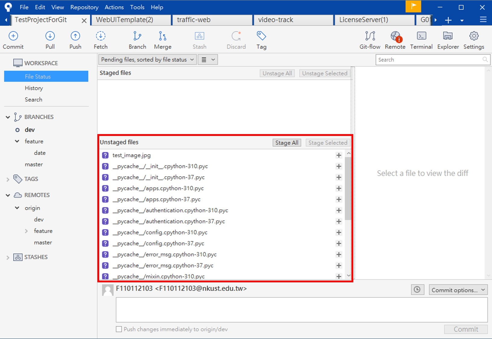
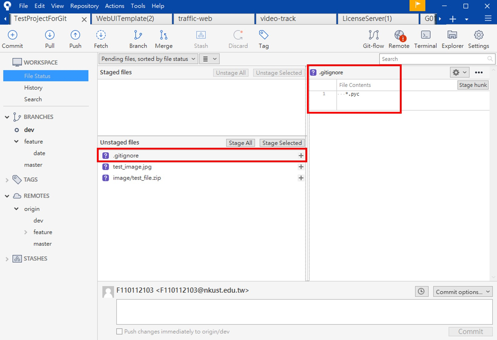

GitLab - Create git ignore
前言
專案開發的過程中，你的程式碼一定會有一些output，可能是python執行時的__pycache__目錄、專案輸出的log file、機器學習模型、docker image、打包後的.exe file、機密資料…等等，一些你不想推上Git的檔案，此時你可以建立一個’.gitignore’來過濾這些你不想上傳的檔案或目錄。
關於.gitignore
.gitignore被放在Git目錄下，顧名思義Git ignore就是在定義我們上傳Git時的忽略清單，一旦定義了.gitignore，在每次變更目錄時，git會自動忽略你所定義的檔案、目錄或副檔名。
舉例
今天若我們的專案沒有建立.gitignore
執行python程式時，目錄下會有非常多.pyc的站存檔，並且git上就會看到local端有很多檔案，然後你就會整理的很頭痛
建立.gitignore
建立.gitignore並把你想忽略的項目寫上，git就會自動忽略這些檔案了
就這麼簡單